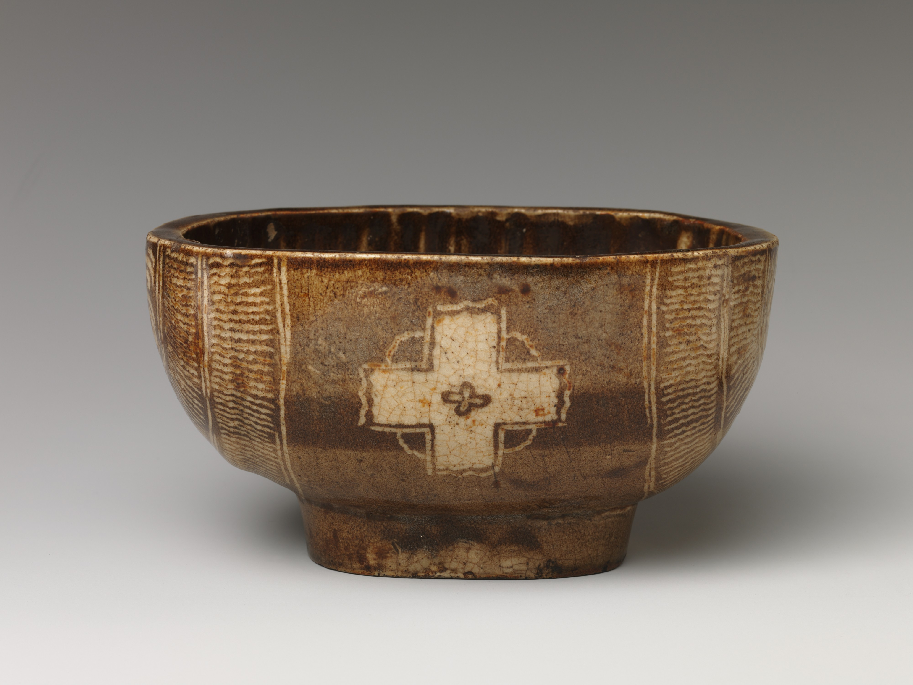

手のひらに伝わる重さ、口に触れる縁、
釉薬の表情もまた、
一服の時間をつくっている。
01一服を受けとめるもの
湯気の向こうにあるのは、茶だけではない。器を持ち上げたときのわずかな重み、親指がふれる高台、唇に届く縁の厚み。目で見ていたものが、手の感覚を通して急に近くなる。
日常の湯のみでも、あらたまった席の茶碗でも、器は飲み物を入れる容れ物以上の役割をもつ。お茶を飲む速さや姿勢、会話の間を、静かに導いているように感じられる。
器は、茶の時間の背景ではない。
その時間に参加する、
もうひとつの存在だ。
02整いすぎないものに目を向ける
均一であることが、いつも美しさの条件とは限らない。焼き上がりに生まれる色の濃淡、手仕事に残るゆらぎ、長く使ううちにつく小さな変化。そこには、完成された形だけを眺めるのとは別の楽しさがある。
ただし、こうした感覚をひとつの「日本らしさ」にまとめるのは慎重でありたい。器の好みも、茶のあり方も、時代や土地、使う人によって異なる。この文章では、ひとつの答えを示すより、器を選び、使うときに生まれる個別の関係を見つめたい。

作品の詳細を見る ↗ / The Met, Open Access (CC0)
03選ぶことから、時間が始まる
器を選ぶとき、用途だけを考える必要はない。朝の光で見たい色、手に持ったときの安心感、季節の菓子との取り合わせ。小さな判断の重なりが、その人なりの一服を形づくる。
だからこそ、器は棚の上だけで完結しない。使われ、洗われ、ときにはしまわれる。その反復のなかで、器は少しずつ暮らしの記憶を引き受けていく。
04お茶と器のあいだに
お茶を飲む行為は、味わうことだけではない。手で受けとめ、目で確かめ、少し立ち止まることでもある。器に意識を向けてみると、いつもの一服に、まだ名前のない豊かさがあることに気づくかもしれない。
写真と作品情報について
- 赤楽茶碗 本阿弥光悦様式（作者不詳）、日本、18世紀。作品番号 36.120.525。The Howard Mansfield Collection, Gift of Howard Mansfield, 1936.
- 十字文三島茶碗、日本、19世紀初頭。作品番号 29.100.633。H. O. Havemeyer Collection, Bequest of Mrs. H. O. Havemeyer, 1929.
写真：The Metropolitan Museum of Art, New York。いずれも同館がPublic Domainとして公開するOpen Access画像（CC0）を使用。作品情報は同館の所蔵品ページに基づきます。画像の色調変更・生成加工は行っていません。利用条件 ↗